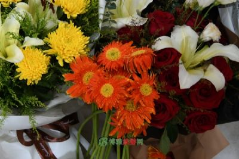
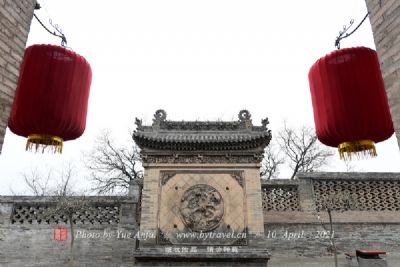

东阳市革命烈士陵园
缅怀先烈，激励后人自鸦片战争特别是中国共产党诞生后，东阳人民为了国家的独立，民族的解放，进行了不屈不挠的斗争，数百名优秀的东阳儿女为此献出了宝贵的生命。为了缅怀先烈，激励后人，1953年12月，东阳县人民政府拨款在吴宁镇新安寺塘兴建了革命烈士陵园。
社姆山风景名胜区
教文化和风景旅游文化于一体景区融宗教文化和风景旅游文化于一体，始建于宋瑞拱二年（公元989年）的桐木寺已历千古沧桑。天王殿、观音殿、社姆殿等建筑古朴、肃穆、庄严。景区正中，抗日宣传队集合地纪念碑巍然屹立。林泉云间、摩岩上处处可见社会名流、文人墨客的题咏。

横店明清民居博览城
再现了以夫子庙为中心的繁华古都风貌横店明清民居博览城，2001年开始筹建，2008年10月1日正式、全面地对外开放，占地面积900余亩，是集古建保护、影视拍摄、旅游观光、艺术展览于一体的综合性影视文化旅游区，也是横店影视城中历史最长、投资最大、内涵最为丰富的景区之一，分为“桃花源”和“秦淮河”两大景系。